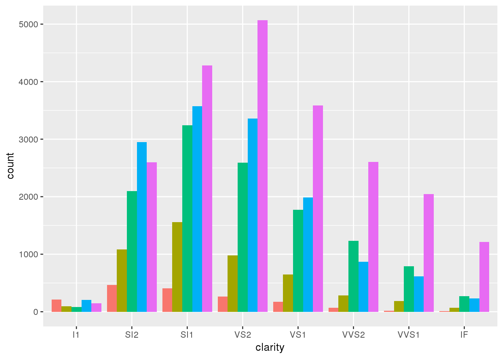
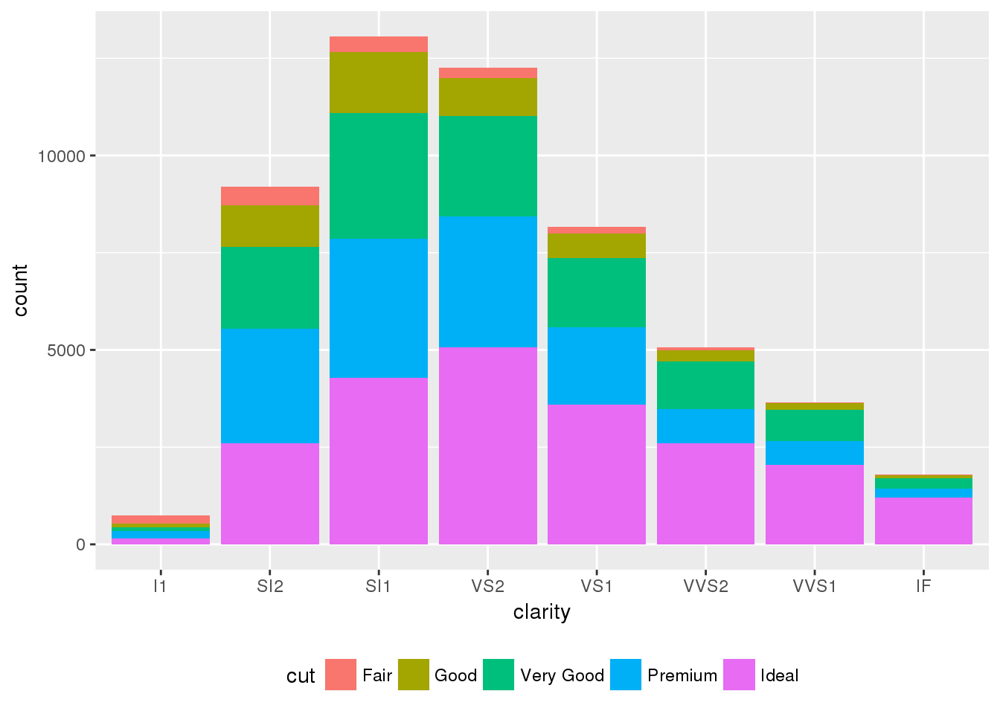

Chapter 4 EDA - Using ggplot2
Rafe C. H. Liu / Johnson Hsieh, LastUpdate: 2018-07-16
4.1 EDA
- Let the data reveal itself.
It is important to understand what you can do
before you learn to measure how well you seem to have done it.
(John Tukey, 1977)
- Data Visualization
- 清晰有效地傳達與溝通訊息
- 教學、研究、宣傳、美學、功能兼顧
- 統計圖形、訊息可視化
- Chart suggestion
{kind=link}
4.2 library(ggplot2)
- The grammar of graphics:
- 由 Hadley Wickham 於 2005 年發表 (Chief Scientist in RStudio)
- 當前最多人使用的視覺化 R 套件
- 取自 “The Grammar of Graphics” (Leland Wilkinson, 2005)
- 設計理念
- 採用圖層系統 (layer)
- 用抽象的概念來控制圖形，避免細節繁瑣
- 圖形美觀
- 基礎語法
# old school
plot(x = 1:10, y = seq(2, 20, 2))
# ggplot2
library(ggplot2)
ggplot(data = df, aes(x = x, y = y)) +
geom_point()- ggplot() - for fine, granular control of everything
- data layer:
- data = data.frame
- long-format (
library("reshape2") - aes(x = x, y = y)
- geom layer: geom_xxx():
- multi-layers:
+ - Geometric objects that define the basic “shape” of the elements on the plot
- multi-layers:
- data layer:
- 必備的參考資料
# list all geom
ls(pattern = '^geom_', env = as.environment('package:ggplot2')) [1] "geom_abline" "geom_area" "geom_bar" "geom_bin2d" "geom_blank"
[6] "geom_boxplot" "geom_col" "geom_contour" "geom_count" "geom_crossbar"
[11] "geom_curve" "geom_density" "geom_density_2d" "geom_density2d" "geom_dotplot"
[16] "geom_errorbar" "geom_errorbarh" "geom_freqpoly" "geom_hex" "geom_histogram"
[21] "geom_hline" "geom_jitter" "geom_label" "geom_line" "geom_linerange"
[26] "geom_map" "geom_path" "geom_point" "geom_pointrange" "geom_polygon"
[31] "geom_qq" "geom_quantile" "geom_raster" "geom_rect" "geom_ribbon"
[36] "geom_rug" "geom_segment" "geom_smooth" "geom_spoke" "geom_step"
[41] "geom_text" "geom_tile" "geom_violin" "geom_vline" 4.2.1 Scatterplot
library(dplyr)
library(ggplot2)
# iris dataset
iris %>%
ggplot(aes(x = Sepal.Length, y = Sepal.Width, color = Species, group = Species)) +
geom_point()
- Advanced Scatterplot
# help(mtcars)
ggplot(mtcars, aes(x=wt, y=mpg)) +
geom_point(color="red", size=5, alpha=0.5) 
# Add stat_xxx layer
ggplot(mtcars, aes(x=wt, y=mpg)) +
geom_point(color="red", size=5, alpha=0.5) +
stat_smooth()# Add scale_xxx layer
ggplot(mtcars, aes(x=wt, y=mpg, colour=gear)) +
geom_point(size=5) +
scale_color_continuous(low="yellow", high="red")4.2.2 Line Chart
head(economics)# A tibble: 6 x 6
date pce pop psavert uempmed unemploy
<date> <dbl> <int> <dbl> <dbl> <int>
1 1967-07-01 507 198712 12.5 4.50 2944
2 1967-08-01 510 198911 12.5 4.70 2945
3 1967-09-01 516 199113 11.7 4.60 2958
4 1967-10-01 513 199311 12.5 4.90 3143
5 1967-11-01 518 199498 12.5 4.70 3066
6 1967-12-01 526 199657 12.1 4.80 3018econ <- economics %>%
mutate(year = strftime(date, format = "%Y"),
month = strftime(date, format = "%m"))
ggplot(econ, aes(x = date, y = unemploy)) +
geom_line()
econ %>% filter(year %in% c("2010", "2011","2012", "2013", "2014")) %>%
group_by(year) %>%
ggplot(aes(x = month, y = unemploy, group = year, colour = year)) +
geom_line()4.2.3 Histogram
# hist(diamonds$price)
ggplot(diamonds, aes(x=price)) +
geom_histogram(binwidth=1000)# with density function
ggplot(diamonds, aes(x=price)) +
geom_histogram(aes(y=..density..), binwidth=1000) +
geom_density(color="red")
4.2.4 Bar Chart
- Plot by counting (default)
# counts <- table(diamonds$clarity)
# barplot(counts, main="Car Distribution",
# xlab="Number of Gears")
# by default, stat = "bin"
ggplot(diamonds, aes(x=clarity)) +
geom_bar()- Use stat = “identity” argument
tab <- data.frame(table(diamonds$clarity))
ggplot(tab, aes(x=Var1, y=Freq)) +
geom_bar(stat="identity")- Add fill layer
# change legend position
ggplot(diamonds, aes(x=clarity, fill=cut)) +
geom_bar(position="stack") +
theme(legend.position="bottom")ggplot(diamonds, aes(x=clarity, fill=cut)) +
geom_bar(position="dodge") +
theme(legend.position="NULL")
- Change coord layer
ggplot(diamonds, aes(x=clarity, fill=cut)) +
geom_bar() + coord_flip() +
theme(legend.position="NULL") - Set theme layer
g <- ggplot(diamonds, aes(x=clarity, fill=cut))
g + geom_bar() + coord_flip() + theme_bw() +
theme(legend.position="NULL")4.2.5 Pie Chart
ggplot(diamonds, aes(x=clarity, fill=clarity)) +
geom_bar() 
ggplot(diamonds, aes(x="", fill=clarity)) +
geom_bar() +
coord_polar(theta = "y") 4.3 facet_
- using ggplot2 for cross analysis
ggplot(mtcars, aes(x=mpg, y=disp)) +
geom_point(aes(colour=qsec, size=cyl, shape=as.factor(am))) +
facet_wrap(~gear) +
scale_size(range=c(3,6))4.4 library(gridExtra)
- arrange multiple charts by
gridExtra
g1 <- ggplot(mtcars, aes(x=wt, y=mpg, colour=cyl)) + geom_point()
g2 <- ggplot(mtcars, aes(x=wt, y=mpg, colour=factor(cyl))) + geom_point()
gridExtra::grid.arrange(g1, g2, ncol=2)4.5 library(plotly)
- create interactive plots by
ployly
g1 <- ggplot(mtcars, aes(x=wt, y=mpg, colour=cyl)) + geom_point()
plotly::ggplotly(g1)
Rafe C.H. Liu (劉佳欣)
Data Thinking, Machine Learning & E-commerce expert
Contact Info | Linkedin Profile
Data Thinking, Machine Learning & E-commerce expert
Contact Info | Linkedin Profile